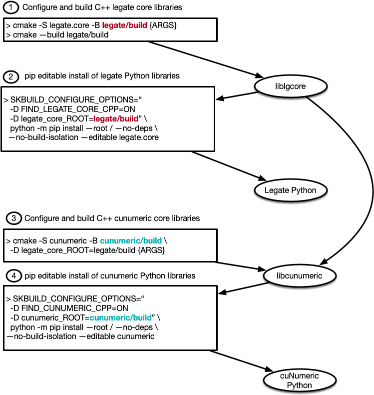

Building from source#
Basic build#
Users must have a working installation of the Legate Core library prior to installing cuNumeric. Installing cuNumeric by itself will not automatically install Legate Core.
As for other dependencies, the Dependencies section on the Legate Core build instructions also covers cuNumeric, so no additional packages are required.
Once Legate Core is installed, you can simply invoke ./install.py from the
cuNumeric top-level directory. The build will automatically pick up the
configuration used when building Legate Core (e.g. the CUDA Toolkit directory).
Advanced topics#
Building through pip & cmake#
cuNumeric uses the same cmake/scikit-build-based build workflow as Legate Core. See the Legate Core build instructions for an overview.
There are several examples in the scripts folder. We walk through the steps in
build-with-legate-separately-no-install.sh here.
We assume a pre-existing Legate Core build. For details on building Legate Core, consult the Legate Core repository.
First, the CMake build needs to be configured:
$ cmake -S . -B build -GNinja -D legate_core_ROOT:STRING=path/to/legate/build
We point cuNumeric to the Legate build tree, not an installation. This generates all build-dependent headers and Python files.
Once configured, we can build the C++ libraries:
$ cmake --build build
This will invoke Ninja (or make) to execute the build. Once the C++ libraries are available, we can do an editable (development) pip installation.
$ SKBUILD_BUILD_OPTIONS="-D FIND_CUNUMERIC_CPP=ON -D cunumeric_ROOT=$(pwd)/build" \
python3 -m pip install \
--root / --no-deps --no-build-isolation
--editable .
The Python source tree and CMake build tree are now available with the environment Python for running cuNumeric programs. The diagram below illustrates the complete workflow for building both Legate core and cuNumeric.
{kind=link}